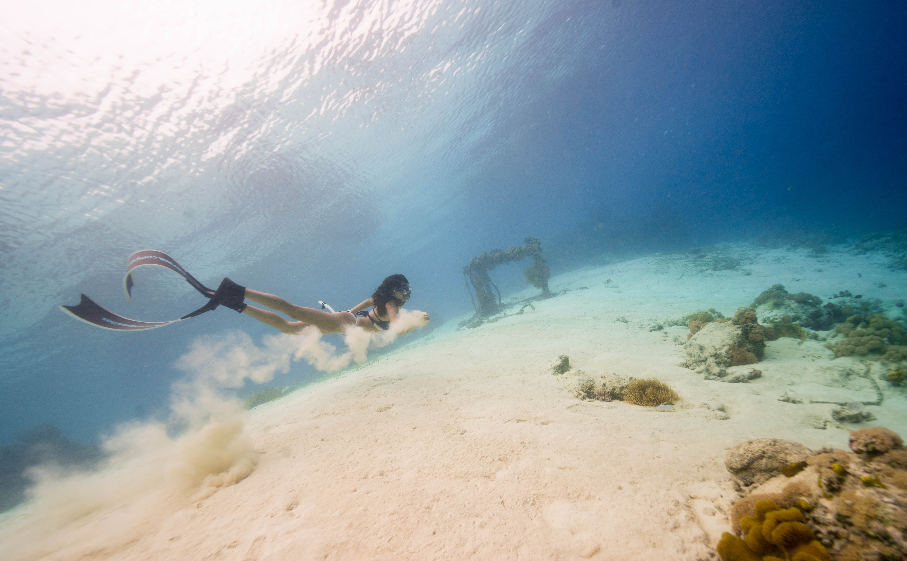

The waves of the sea help me get back to me. Memories have huge staying power, but like dreams, they thrive in the dark, surviving for decades in the deep waters of out minds like shipwrecks on the sea bed.